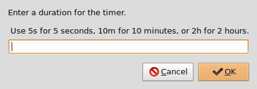
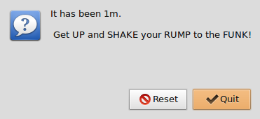

Learning to write shell scripts leads to sitting at your computer for long stretches of time. It is good for mind and body to take a break and get up and enjoy some funky time movement at regular intervals. But how do you remember to do so when you are oh so engrossed in coding? Why you write a shell script to remind you of course!
How about a simple popup reminder that you have been sitting much too long and its time to shake it up? The popup requirement leads to Zenity which provides a shell script with simple graphical boxes for user input, dialog and error messages, calendars, filename selection, and more. Cool and useful!
Largely inspired by this tutorial on Linux graphical shell scripts I created a countdown timer that would:
- ask for a time (seconds, minutes, hours)
- sleep for the specified time
- then play something funky
- offer the choice of timer reset or quit program
#!/bin/bash
#: VARIABLES
Scriptname="FunkyGoodTimer"
Description="A simple (but funky) graphical countdown timer"
Synopsis="$Scriptname [-v|-h]"
Version="0.X"
# -------- #
RequiredPrograms="zenity, {vorbis-tools,alsa-utils,mpg123}"
#
# UNCOMMENT: *one* of the Player entries:
Player="/usr/bin/ogg123" # OGG
#Player="/usr/bin/aplay" # WAV
#Player="/usr/bin/mpg123" # MP3
#
# CHANGE THIS: pick something FUNKY to play ...
Funky="$HOME/.FunkyGoodTimer/you_been_sitting_much_too_long.ogg"
#: FUNCTIONS
VersionInfo()
{
cat << _EOF_
$Scriptname, Version $Version
_EOF_
}
HelpInfo()
{
cat << _EOF_
Usage: $Synopsis
${Description}.
Debian package requirements: $RequiredPrograms
OPTIONS
-v display version
-h display help
${Scriptname}:
* ask for a time (seconds, minutes, hours)
* wait for the specified time
* then plays something funky (YOU are the judge of that :-))
* offer the choice of timer reset or quit program
Requires zenity + a console audio player to be installed. To play OGG tracks with $Scriptname on Debian/Ubuntu:
# apt-get install zenity vorbis-tools
Optionally install the 'alsa-utils' and 'mpg123' packages to play WAV and MP3 tracks.
_EOF_
}
PlayerTest()
{
if [[ -x "$Player" ]]
then
:
else
zenity --error --title="ERROR: Music Player Not Installed" \
--text="'$Player' is missing on this box.\n\n Use your package manager to install this funky player."
exit
fi
}
FunkTest()
{
if [[ -e "$Funky" ]]
then
:
else
zenity --error --title="ERROR: No Funk" \
--text="Track '$Funky' is missing on this box.\n\n Open this script in a text editor and select another piece of funkiness."
exit
fi
}
SetTime()
{
sleep $Time
}
NoTime()
{
zenity --question --title="TIME is UP" --ok-label="Quit" --cancel-label="Reset" \
--text="It has been $Time.\n\n Get UP and SHAKE your RUMP to the FUNK!"
}
HitIt()
{
while :
do
$Player $Funky & NoTime
if [[ $? -eq 0 ]]
then
killall $Player
exit
else
killall $Player
SetTime
fi
done
}
#: LET'S ROLL ...
# process any (optional) positional parameters
if [[ $1 != "" ]]
then
while getopts “hv” OPTION
do
case $OPTION in
v ) VersionInfo
exit
;;
h ) HelpInfo
exit
;;
? ) HelpInfo
exit 1
;;
esac
done
fi
# test for default music player and track selection
PlayerTest
FunkTest
# set the countdown timer
Time=$(zenity --entry --title="FunkyGoodTimer" \
--text="Enter a duration for the timer.\n\n Use 5s for 5 seconds, 10m for 10 minutes, or 2h for 2 hours.")
SetTime
# countdown ends ... funk begins ... reset or quit?
HitIt
The script requires zenity plus a console audio player to be installed ... I suggest ogg123 for OGG tracks, mpg123 for MP3, and aplay for WAV. On Debian install ...
$ sudo apt-get install zenity vorbis-tools mpg123 alsa-utils
All set to set time! Run program and enter a time to countdown:
Time is UP. Get UP! Choose to reset the timer or quit.
